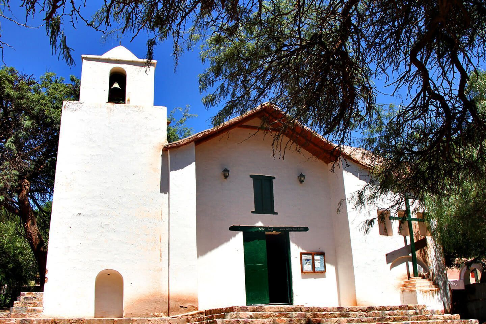

Lugares recomendados!
podés asombrarte con fascinantes paisajes típicos de la provincia, más allá de la Quebrada de Huamahuaca.

4.8/5
religioso lugar de interes monumento fotografias
Iglesia de Santa Rosa de Lima
Iglesia ubicada frente a la plaza principal de Purmamarca. Data de 1648 y se encuentra muy bien conservada. Merece una...
ver mas